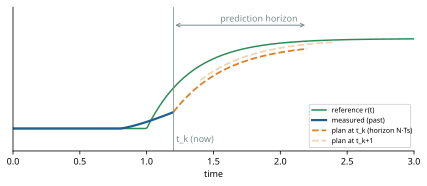
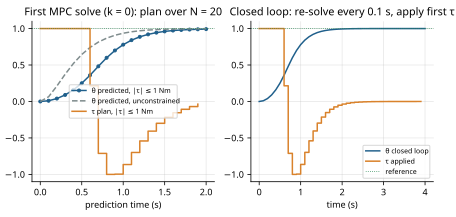

Model predictive control chooses each command by solving an optimization problem about the future, again and again. This chapter builds the idea from scratch, works a small example by hand and by computer, and only then turns to the seven-joint robot.
Intuition. When you drive, you do not decide the steering angle only from where the car is now. You look ahead at the road for the next few seconds, imagine how the car will respond to steering and braking, choose a plan that keeps you on the road comfortably, start executing its first moment, and then, a fraction of a second later, look again and re-plan. That is model predictive control:
Why it matters. PID and computed-torque control react to the current error. MPC is the standard method that anticipates the reference and handles constraints explicitly: if the motor can deliver at most 12 Nm, the optimizer plans within that limit instead of discovering it when the torque is clipped. That is exactly what distinguishes the torque MPC from CTC in this project's results.
Model: it needs an explicit mathematical model of the plant's dynamics. Predictive: it uses the model to predict future states over a horizon. Control: the output is the control input applied now. The family also goes by "receding-horizon control". In industry it has been used in chemical process control since the 1970s, where slow dynamics left minutes for each optimization; fast solvers have brought it to robots with millisecond sampling times.

Re-planning at every step is what makes MPC a feedback controller: each new plan starts from the measured state, so model errors and disturbances are corrected at the next update. The plan itself is open-loop over the horizon; the closed loop comes from repetition. The horizon "recedes": it always extends the same length into the future from the current time.
Physics gives a continuous-time model $\dot x = f(x, u)$. The controller only changes its command at sampling instants $t_k = kT_s$ and holds it constant in between (zero-order hold). It therefore needs the discrete-time map from one sampling instant to the next:
\[ x_{k+1} = F(x_k, u_k). \]Example: one joint. A single joint with inertia $I$ and torque $\tau$ (no gravity, no friction) has state $x = (\theta, \omega)$ and $\dot\theta = \omega$, $\dot\omega = \tau/I$. With $\tau$ constant over an interval of length $T_s$, integrating exactly gives
\[ \theta_{k+1} = \theta_k + T_s\,\omega_k + \frac{T_s^2}{2I}\,\tau_k, \qquad \omega_{k+1} = \omega_k + \frac{T_s}{I}\,\tau_k, \qquad\text{i.e.}\quad x_{k+1} = \underbrace{\begin{bmatrix}1 & T_s\\ 0 & 1\end{bmatrix}}_{A} x_k + \underbrace{\begin{bmatrix} T_s^2/2I \\ T_s/I\end{bmatrix}}_{B} \tau_k. \]This is a linear model, $x_{k+1} = Ax_k + Bu_k$. Real robots are nonlinear (gravity contains sines; inertia depends on posture). Linear MPC approximates the nonlinear map by a linear (affine) one around the current operating point, $x_{k+1} \approx Ax_k + Bu_k + c$, re-computed at every update. Nonlinear MPC keeps $F$ nonlinear and solves a harder non-convex problem. The project uses linear MPC (Chapter 8).
The state $x_k$ must contain everything needed to predict the future given the inputs. For a rigid arm that is the joint positions and velocities: $x = (q, \dot q) \in \mathbb{R}^{14}$ for 7 joints. The control (input) $u_k$ is what the controller sets: $u = \tau \in \mathbb{R}^7$ for the torque MPC, or 7 servo setpoints for the servo MPC. Over a horizon of $N$ steps the unknowns are $u_0, \dots, u_{N-1}$, and with them the predicted states $x_1, \dots, x_N$.
The prediction horizon $N$ is how many steps ahead the model looks; $N T_s$ is the look-ahead time. Some formulations use a shorter control horizon $N_u < N$, after which the input is held constant, to reduce the number of unknowns. Our MPCs use $N_u = N$. Longer horizons see further (they can start a manoeuvre earlier) but cost more computation, and a linearized model becomes less accurate far into the future. The sampling time $T_s$ trades responsiveness against the time available to solve each problem.
Torque MPC: $T_s$ = 20 ms (50 Hz), $N$ = 25, look-ahead 0.5 s. Servo MPC: $T_s$ = 20 ms, $N$ = 15, 0.3 s (configs/default.yaml).
The cost turns "good behaviour" into a number. The most common form is a sum of weighted squares:
\[ J = \sum_{k=1}^{N} (x_k - r_k)^T Q\,(x_k - r_k) \;+\; \sum_{k=0}^{N-1} u_k^T R\,u_k \;+\; \sum_{k=0}^{N-1} (u_k - u_{k-1})^T S\,(u_k - u_{k-1}). \]The first term penalizes deviation from the reference $r_k$ (position and velocity), the second penalizes effort, the third penalizes jerky changes of the command. The diagonal weight matrices $Q$, $R$, $S$ express priorities: large $Q$ means "track tightly"; large $R$ means "save torque". Squares are used because they make the problem a convex quadratic program (below) and punish large errors much more than small ones. Often the last stage gets a larger weight (a terminal weight) to stand in for the future beyond the horizon.
Constraints are what MPC handles better than any classical controller:
Collect all unknowns in one vector $z = (x_1, \dots, x_N, u_0, \dots, u_{N-1}, s_1, \dots)$. The cost is quadratic in $z$ and every constraint, including the dynamics $x_{k+1} = Ax_k + Bu_k + c$, is linear. That is a quadratic program (QP) in the standard form used by the OSQP solver:
\[ \min_z \;\tfrac12 z^T P z + q^T z \qquad \text{subject to} \qquad l \le \mathcal{A} z \le u. \]Equality constraints are rows with $l = u$. If $P$ is positive semidefinite the problem is convex: any local minimum is the global minimum, and reliable solvers find it in a bounded, predictable number of iterations. This is the decisive practical advantage of linear MPC over nonlinear MPC.
Two ways to set up the QP exist. The condensed form eliminates the states using the dynamics ($X = \Phi x_0 + \Gamma U$), leaving only the inputs: few variables, but dense matrices. The sparse (or simultaneous) form keeps the states as variables and the dynamics as equality constraints: more variables, but very sparse matrices that a sparse solver handles efficiently. Our MPCs use the sparse form; v0.3 measured a condensed variant and found it slower (94 ms per solve) because the matrices become dense.
OSQP (Operator Splitting Quadratic Program solver) solves such QPs with ADMM, an iterative
method that alternates between a linear-system solve (with a factorized KKT matrix) and a simple projection onto
the bounds. Its useful properties for MPC are that a warm start from the previous solution
cuts iterations, an iteration limit bounds the solve time, and solution polishing refines the
approximate ADMM solution to high accuracy when the active constraints have been identified. Its tolerances
eps_abs/eps_rel define "converged".
Take the single joint above with $I$ = 0.5 kg·m² and $T_s$ = 0.1 s:
\[ A = \begin{bmatrix}1 & 0.1 \\ 0 & 1\end{bmatrix}, \qquad B = \begin{bmatrix}0.01 \\ 0.2\end{bmatrix}. \]Goal: move from rest at $\theta = 0$ to $\theta = 1$ rad and stop there, so $r = (1, 0)$. Weights: $Q = \mathrm{diag}(10, 1)$, $R = 0.1$, no rate term.
With one step, $J(u_0) = (x_1 - r)^TQ(x_1 - r) + R u_0^2$ with $x_1 = Ax_0 + Bu_0$. Setting $dJ/du_0 = 0$:
\[ 2B^TQ(Ax_0 + Bu_0 - r) + 2Ru_0 = 0 \quad\Longrightarrow\quad u_0^* = \frac{B^TQ\,(r - Ax_0)}{B^TQB + R}. \]From rest, $Ax_0 = 0$, $B^TQr = 0.01\cdot 10\cdot 1 = 0.1$, $B^TQB = 10\cdot 0.01^2 + 1\cdot 0.2^2 = 0.041$, so $u_0^* = 0.1/0.141 = $ 0.709 Nm. The predicted state is $x_1 = (0.0071, 0.142)$. The one-step controller is greedy: it does not "know" that velocity built up now must be braked later, except through the velocity weight.
Now look 2 s ahead ($N$ = 20) and add the hard constraint $|\tau| \le 1$ Nm. This has 60 unknowns (40 states, 20
torques), so we solve it as a QP with OSQP, exactly as the project's controllers do
(docs/guide_src/make_figures.py, mpc_example).

Notice what happened. Nothing in the controller says "accelerate, then brake". The plan emerges from three
ingredients: the model (which says how torque changes the state), the cost (which says what we want), and the
constraint (which says what is possible). The same three ingredients, in 14 state dimensions instead of 2, are what
TorqueMPCController solves 50 times per second.
Nothing in MPC is learned from data. The model comes from physics (here, MuJoCo's equations evaluated at the current state); the cost and constraints are written by the engineer; the optimizer computes the answer from scratch at every step. There are no trainable parameters, no dataset and no training phase. Change the cost weights or the target and the very next solve reflects it. This is also why MPC needs an accurate model: it can only be as good as its predictions. (Learning can be combined with MPC, for example to learn a model or a terminal cost, but this project does not do so.)
| MPC (as in this project) | Reinforcement learning / learned policy | |
|---|---|---|
| Where the behaviour comes from | online optimization of an explicit cost with an explicit model | a function (e.g. neural network) trained offline by trial and error to maximize reward |
| Model needed? | yes, explicitly | not necessarily (model-free RL) but needs a simulator or lots of data |
| Computation at run time | solve an optimization every step (ms) | evaluate the network (µs–ms) |
| Constraints | explicit, enforced in each solve | usually only encouraged through reward shaping |
| Change the task | change the cost/reference; immediate | usually retrain |
| Guarantees | analysable (with assumptions) | hard to certify |
| Strength | precise, constraint-aware tracking of known dynamics | complex behaviours (contact-rich, perception-driven) that are hard to model or specify |
The two are complementary rather than rivals; many research systems put a learned high-level policy on top of a model-based low-level controller like ours (Chapter 19).
max_iter = 500 iterations, the solve fails; our controllers then
hand over to a fallback controller (PID or CTC) until the next successful update.